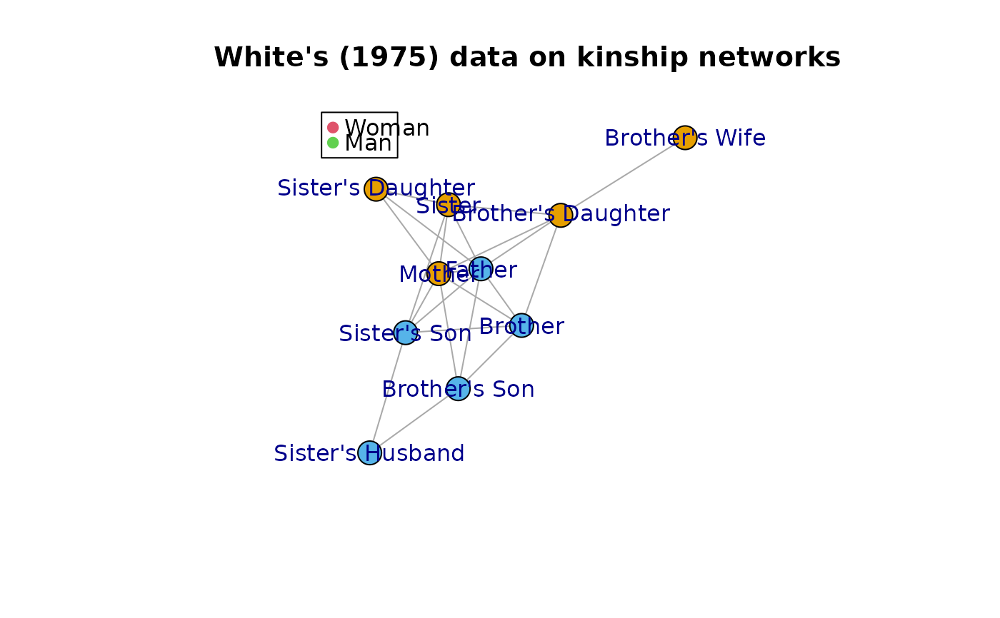

This data is taken from Freeman (1978) who uses data from White (1975) to illustrate the segregation measure.
WhiteKinshipObject of class "igraph" with an undirected network of size 10. Vertex
attribute gender, takes values "male" or "female".
Freeman, Linton C. (1978) "Segregation in Social Networks" Sociological Methods and Research 6(4):411--429
Based on Freeman (1978):
White dealt with the problem of segregation among social positions rather than among individual persons. He specified a set of standard kinship positions that he called the ``effective kinship network''.
Traditional analysis (e.g. Murdock, 1971) have argued that societies sometimes proscribe interaction among some kinship positions as an extension of icest taboos. Thus, given this reasoning, kinship positions should be segregated according to the gender of their occupants. White's data provide possibility to test of this hypothesis.
White collected data on the rules governing various kinds of interaction among occupants of his ten standard kinship positions for a sample of 219 societies. For every pair of positions White specified whether or not interaction between their occupants was ever restricted in any society in the sample.
Freeman, Linton C. (1978) "Segregation in Social Networks" Sociological Methods and Research 6(4):411--429
Murdock, G. P. (1971) "Cross-Sex Patterns of Kin Behavior" Ethnology 1: 359--368
White, D. R. (1975) "Communicative Avoidance in Social Networks". University of California, Irvine. (mimeo)
if( requireNamespace("igraph", quietly = TRUE) ) {
set.seed(2992)
plot(
WhiteKinship, layout=igraph::layout.fruchterman.reingold,
vertex.color= match(igraph::V(WhiteKinship)$gender, unique(igraph::V(WhiteKinship)$gender)),
vertex.label=igraph::V(WhiteKinship)$name, vertex.label.family="",
main="White's (1975) data on kinship networks"
)
legend("topleft", col=2:3, legend=c("Woman", "Man"), pch=19)
}
